End-to-end product design of a fintech mobile app: multi-currency accounts (₾ / $ / €), card deposits from local banks, KYC with liveness verification, and biometric login — taken from market research to a fully documented, dev-ready handoff in one month.
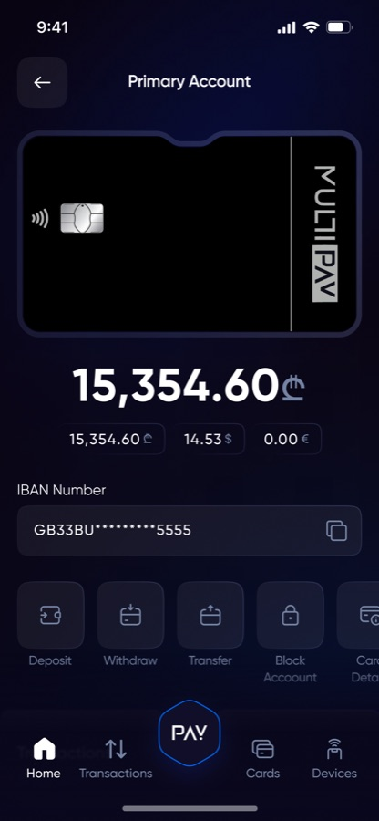
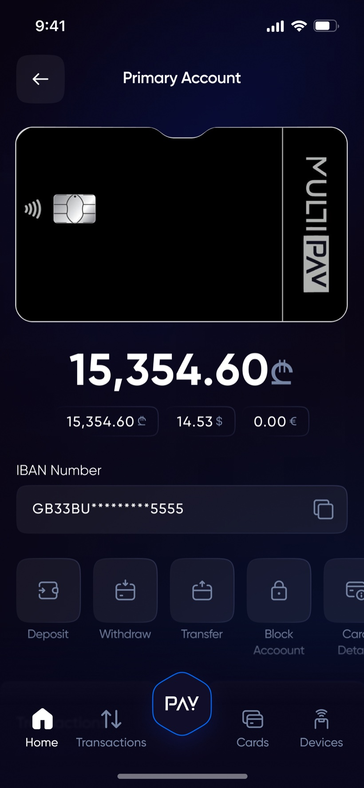
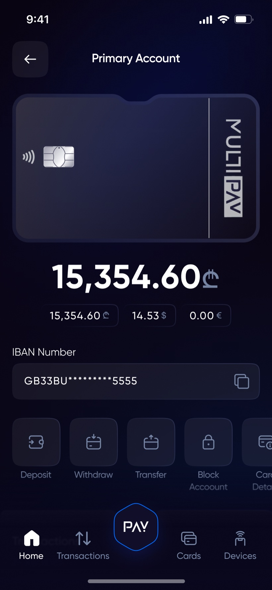
People in Georgia live between three currencies: salaries in lari, savings in dollars, subscriptions in euros. Managing that usually means juggling two banking apps and a trip to an exchange booth. Multipay's bet was a single wallet where GEL, USD and EUR live side by side, funded from local bank cards, with exchange built into the transfer flow itself.
Before drawing screens I mapped the competitive landscape and interviewed people around me who live the multi-currency reality — freelancers paid in USD, families with EUR subscriptions, everyone spending in GEL.
Balances always visible, IBAN masked but copyable, panic actions (block account, freeze card) one tap from Home. The app never hides what's happening with money.
Every step of every flow asks exactly one question: from where, to where, how much, confirm. No screen mixes decisions — which is why 20+ flows stay learnable.
Currency chips sit directly under the main balance on every account screen. Switching ₾ / $ / € is a glance, not a journey.
Every flow exists in English and Georgian, reviewed for layout, truncation and tone — because trust collapses the moment an error message switches language.
I started with a mood board, then built the same core screens in five complete color directions — not swatch tests, but full flows: a Google-inspired palette, a Facebook-style blue, a mentor-suggested variant, deep purple, and cyan. Seeing real screens side by side made the decision honest instead of theoretical.
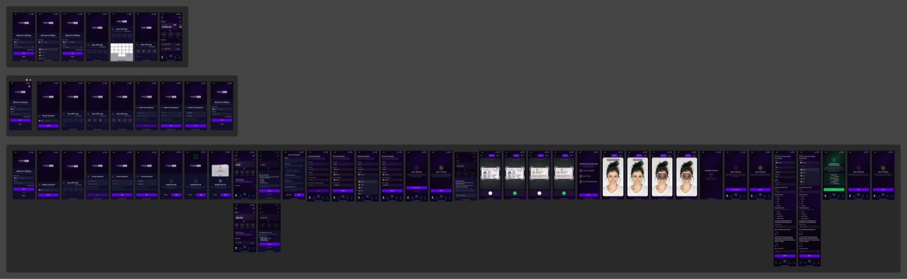
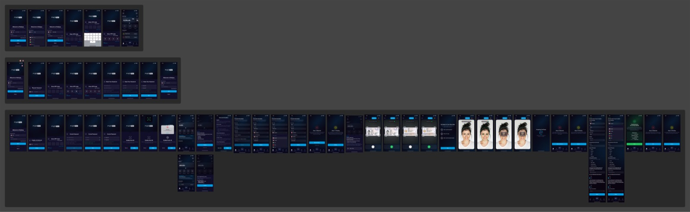
Electric blue #2C4FFF on near-black navy #090411. Blue reads as banking and security; the dark base makes balances and the premium card the heroes of every screen, and passes contrast checks even at caption sizes.
Deep purple looked striking but read as crypto/gaming — the wrong association for an app holding salaries. The Google and Facebook palettes tested friendlier, but felt borrowed; a wallet shouldn't remind you of someone else's brand.
The home screen leads with the physical card and total balance, currency chips directly beneath (₾ 15,354.60 / $ 14.53 / € 0.00), then the five actions people actually come for: Deposit, Withdraw, Transfer, Block, Card details. The hexagonal PAY button anchors the tab bar — payment is the center of the product, so it's the literal center of navigation.
Top-ups come from local BOG and TBC cards — the two cards every Georgian actually owns. Quick-amount chips (10 / 20 / 50 / 100₾) cover most real deposits; card entry supports save-for-next-time; and the flow always resolves to an explicit end state.
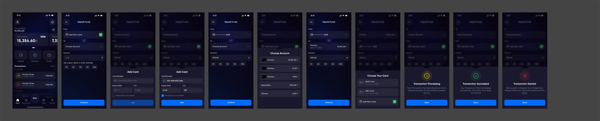
Internal same-currency, internal with exchange, and external to IBAN are three separate flows in the spec — but to the user they're the same four questions: from, to, amount, confirm. Exchange shows the rate inline at the amount step, so converting salary into dollars is a transfer, not a feature to find.
Money leaves either to a bank card or an IBAN — mirrored flows with the same confirmation contract. Card management covers linking, blocking and detail views without leaving the wallet.
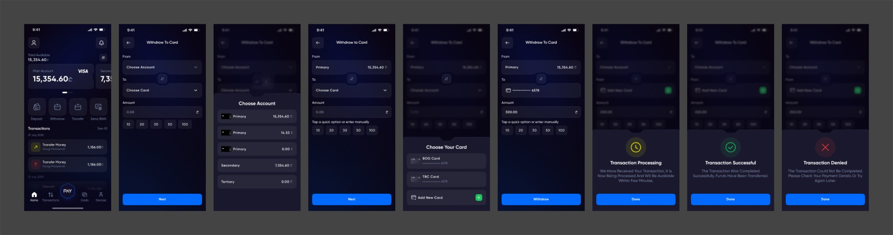
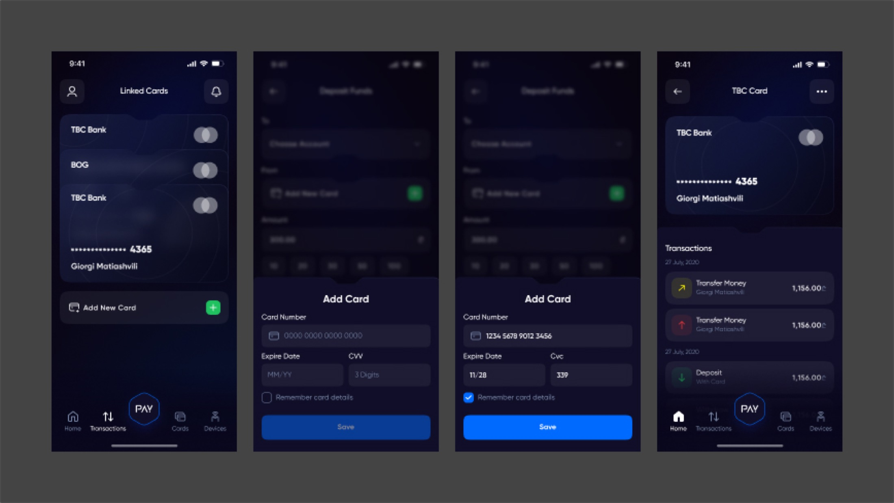
Face ID / Touch ID after first login, a Devices screen listing every active session, and account blocking one tap from Home. Security isn't a settings page — it's furniture in the main rooms of the app.
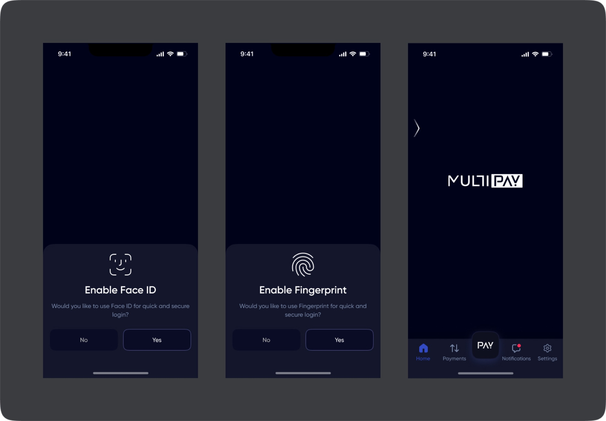
KYC is where wallets lose users. I explored it wide — OTP entry, document scanning, selfie liveness — and designed every failure state, not just the happy path: blurry ID, rejected selfie, pending review, verified. The exploration page alone grew past 600 screens before the final flow was distilled.
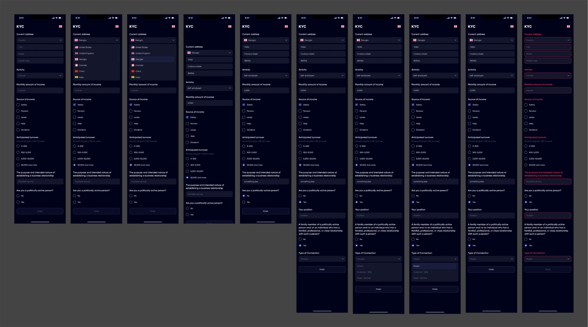
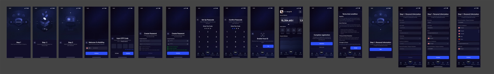
2,000+ screens stay consistent because they're built from 49 components and two documented overlay structures — a popup and an action drawer — with fixed spacing rules. Buttons, inputs, selects and OTP fields each ship with neutral, focused, typed, error and disabled states. That's what made 20+ flows consistent without 20+ redesigns.
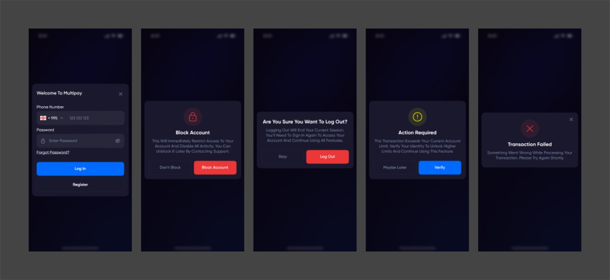
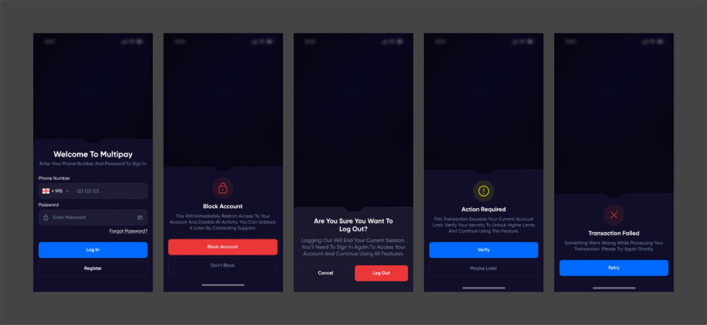
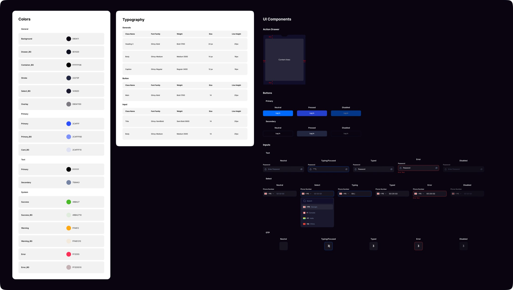
Georgian isn't a translation pass — it's a layout stress test. Georgian strings run long and the script has no uppercase, which changes button widths, truncation rules and typographic hierarchy. All 20+ flows — 300+ screens — were rebuilt and reviewed in Georgian before handoff, not after.
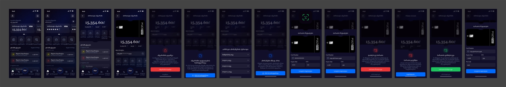
The final deliverable was a dedicated Handoff page: 20 flows — sign-in, registration, deposits, three transfer types, two withdrawal types, cards, transactions, notifications, devices, account management — each laid out screen-by-screen with the style guide at the top. A developer can build any screen without asking "what happens if this fails?", because the answer is already drawn.
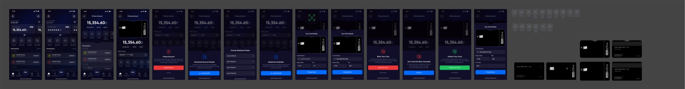
"Research, five directions, 2,000+ screens, 49 components, two languages, twenty documented flows — one month."
I'd bring usability testing earlier into the KYC flow — I designed all the failure states, but real users would have shown me which ones they actually hit most, and the flow could be ordered around that. And I'd define the Georgian type scale on day one instead of adapting it mid-project; localization touched more components than I'd budgeted for.
Have a project in mind? I'd love to hear about it.